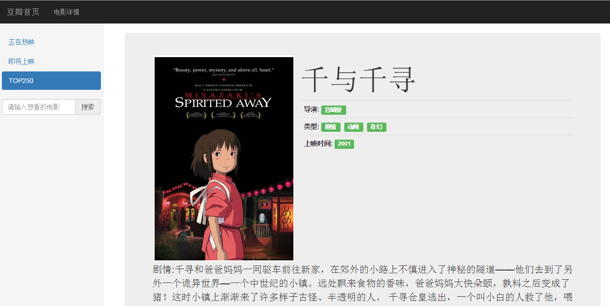

张昇
WebZhang
一步一脚印
我的信息
- 意向职位：
- Web前端开发
- 期望待遇：
- 面议
- 目标城市：
- 杭州
- 专 业：
- 动画
- 学 历：
- 本科
- QQ：
- 709875865
- 电 话：
- 18758162075
- 邮 箱：
- 18758162075@163.com
我擅长的
- HTML
- CSS
- JavaScript
- Html5
- jQuery
- Bootstrap
- PHP
- Node.js
- Angularjs
联系方式
- 个人网站:
- zhangshengint.github.io
- 博客账号:
- zhangsheng@int
- 你说程序员的世界只有黑白
- 我说黑白里的极光你没机会领略
- 你说夜里飞快的敲击是种折磨
- 我说那声音不比布谷鸟枯燥
- 你说的世界
- 我说的
- 也是世界
我的技能
- 熟悉HTML+CSS布局，遵循W3C规范，编写有语义化、模块化的页面代码,有良好的代码编写风格.
- 熟悉JavaScript,能运用jQuery工具库，实现日常交互效果,契合最优用户体 验,能用javaScript做一些动画,例如:轮播图,盒子拖拽,鼠标切换动画,tab栏切换,放大镜,导航栏背景移动,时针等.
- 熟悉H5,如语义化标签、canvas标签以及对移动端的响应式布局等等,运用其进行更优秀的开发项目
- 熟悉CSS3中的弹性盒子,弹性盒子在工作中很好用,能做好响应式布局,缺点就是一些低版本的兼容问题,能用CSS3中的transform来做一些动画,还有利用关键帧动画来做一些动画效果.
- 熟悉Ajax实现异步请求的方式，运用其(包括原生和jQuery的Ajax)实现懒加载等功能来进行对网页的优化,和请求网络数据加以运用
- 了解且能运用Angularjs框架和MVC架构模式进行数据源的获取和控制它的视图呈现
- 熟悉Bootsrap等常见前端框架,以及熟练运用作为办成品的这些框架进行项目开发
- 9)了解PHP这一后台语言,运用其能进行与后台的交互,实现对数据的获取、抓包,优雅地呈现在网页上
我的项目


豆瓣电影
简介: Angularjs、Bootstrap框架,MVC架构模式,API请求数据即时更新豆瓣电影详情
主要运用技术：MVC架构模式,Angularjs、bootstrap框架


我想
乐观开朗，独立性与适应力较强，有很强的团队意识。 作为web开发人员， 我具备出色的学习能力并且乐于学习、敢于创新，不断追求卓越； 作为参与者，我具备诚实可信的品格、富有团队合作精神。真诚地希望您能够 为我提供一个施展才华的平台！。